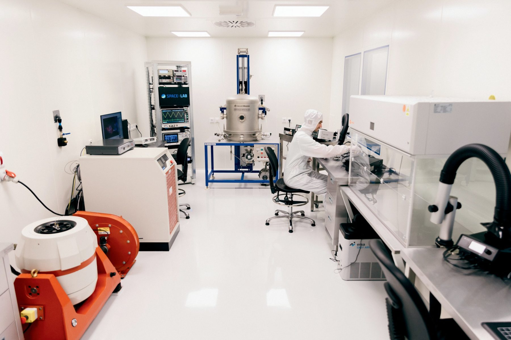
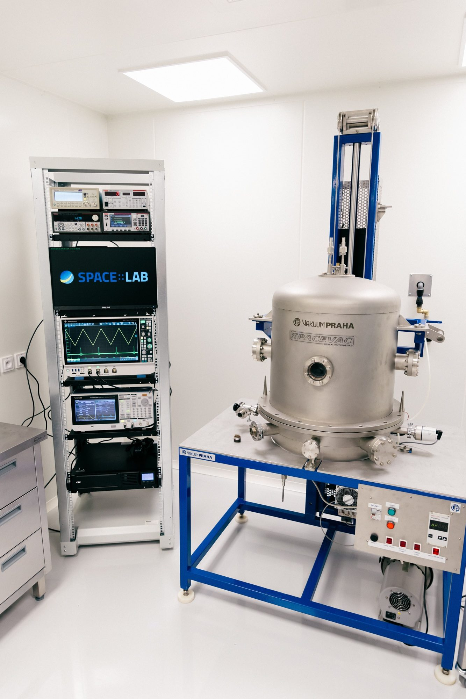

Space cleanroom
A speck of dust in the wrong place ends a mission. Since May 2026 the critical phases of our work — assembly, integration, environmental testing — happen in a room built to keep that speck out, in Košice, instead of in someone else’s facility abroad.
Why a cleanroom
Flight electronics fail for unglamorous reasons. A particle bridges two pads. A static discharge no one felt degrades a junction that then passes every test and dies in orbit. Neither is recoverable once the hardware has left the ground, so the standard answer is to control the environment in which the hardware is touched at all: particle count, temperature, humidity, and the electrostatic state of every surface and every person.
Our room holds 25 m² at ISO class 7, with an ISO class 5 laminar flow box inside it for the operations that need it — an order of magnitude cleaner, over the bench where the work actually happens. Personnel enter through an air shower; material comes in through a 60 × 60 cm pass-through rather than through the door. Processes follow ECSS, the standards framework ESA projects are run to.
That last point is the one that matters institutionally. Until 2026, the critical phases of development and testing had to happen elsewhere. Now they happen here.

Electronics assembly and inspection
The room is equipped for hand work on flight hardware and for looking at it closely afterwards.
| Soldering | Professional soldering workstations |
|---|---|
| Microscopy | DRV-Z1 3D stereo digital microscope |
| Joint inspection | Ersascope X Inspection System |
| Measurement | Oscilloscopes, power supplies, precision multimeters, function generator, counter |
| Weighing | Analytical precision balance |
The Ersascope is there for the joints you cannot see — the ones under a package, where the only way to judge a solder fillet is to look at it sideways with optics built for the purpose.
Vibration testing
A launch is a few minutes of violence. Qualifying hardware against it means reproducing the loads on the ground, on a shaker, with instrumentation fast enough to see what fails.
| System | Brüel & Kjær LDS V780 |
|---|---|
| Frequency | Up to 4000 Hz |
| Excitation force | Up to 5100 N, sine peak |
| Acceleration | Up to 1050 m·s⁻², sine peak |
| High-speed imaging | Chronos 2.1-HD camera |
Thermal-vacuum testing
Orbit is a vacuum with a temperature gradient. The SPACEVAC chamber puts hardware in both at once, which is how thermal design, outgassing behaviour and the survival of an assembly across its full temperature range get verified before flight rather than after.
| Chamber | Vakuum Praha SPACEVAC |
|---|---|
| Temperature | −100 °C to +160 °C |
| Vacuum | 1 × 10⁻⁷ mbar |
This chamber has flight heritage. The Anti-Coincidence Module we built for JUICE's Particle Environment Package was thermal-vacuum tested in it before delivery to IRF Kiruna — hardware now in cruise towards Jupiter, and due in orbit around Ganymede, was qualified in this vessel. It has since been moved into the cleanroom.

Test automation and interfaces
Environmental testing produces long, dull, unrepeatable runs, so the useful part is automation: National Instruments measurement modules cover temperature, voltage, digital inputs and outputs and relays, driving the test rather than watching it.
Devices under test connect over the buses spacecraft actually use — SpaceWire, MIL-STD-1553, Ethernet, CAN and RS-485/422 — so a unit can be exercised through its flight interfaces while it sits in the chamber or on the shaker.
Opened in May 2026
The cleanroom opened officially on 15 May 2026 as the first space cleanroom in Slovakia, built with support from TIK STEPHANIK — the satellite platform consortium we are part of — and SAV OPEN LABS, both funded by the European Union.
The first scientific apparatus from our department flew into space in 1977. Since then we have contributed to more than 25 space missions. The new space cleanroom, with ISO class 7 air cleanliness, opens the door to taking part in the most demanding ESA projects — and it lets us carry out the critical phases of development and testing here at home.
Šimon Mackovjak, Head of the Department of Space Physics, IEP SAS
The opening was attended by guests from the Slovak Academy of Sciences, the STEPHANIK project consortium, the East Slovak Space Cluster, the Slovak Space Office, and partner universities and companies.
Working with us
Capacity is divided three ways. The facility serves the space programme of IEP SAS first. A share is reserved for joint scientific and technological projects. A further share is available for commercial hire.
If you are developing hardware that needs ISO class 7 assembly, vibration qualification or thermal-vacuum testing — as a research partner or as a customer — write to space-lab@saske.sk.
Talk to us about access
Tell us what you need to measure or test and we will tell you honestly whether our facilities fit. Both facilities are opened to partners under OPENLABS SAV (2026–2029, Programme Slovakia 2021–2027 · ERDF) — instrument hosting at Lomnický štít and serviced or supervised use of the cleanroom are agreed case by case, and enquiries about joint projects go to the same place.